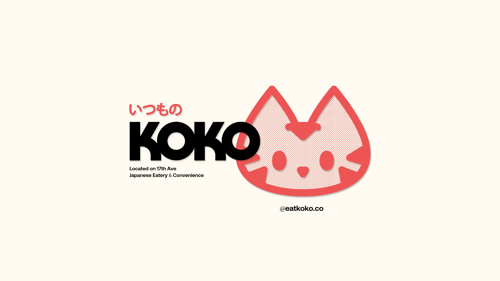
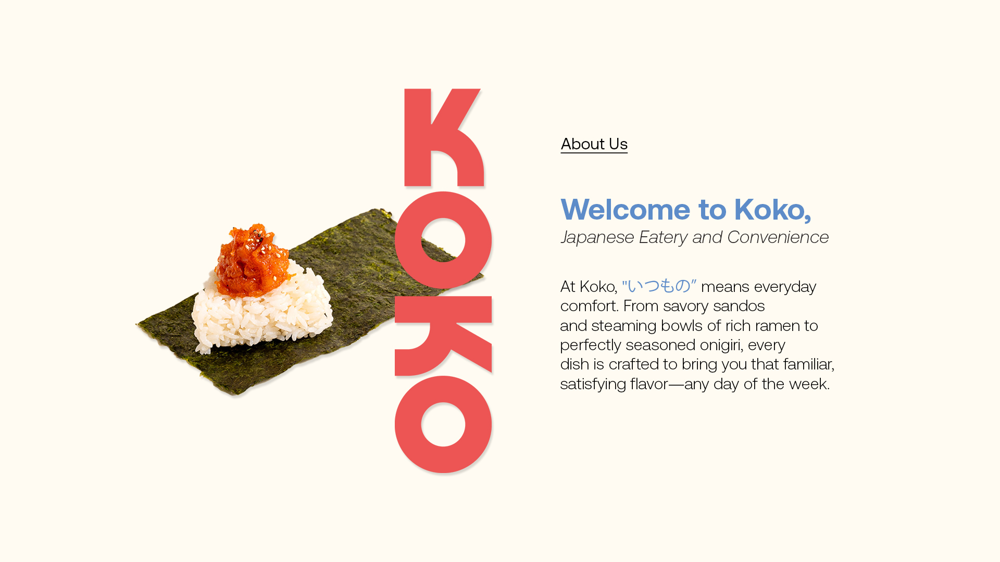
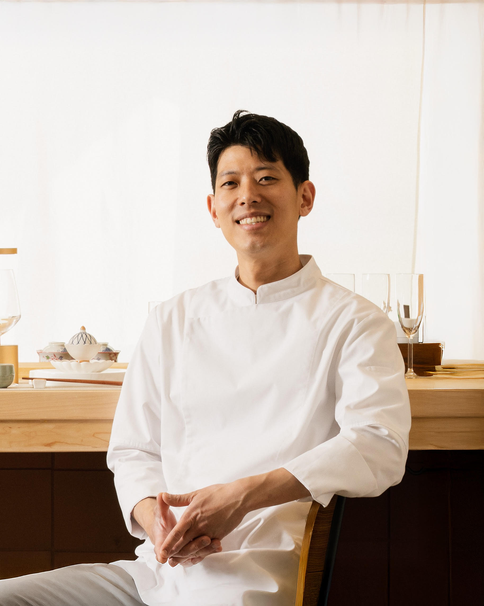

Meet our Chef
Chef Jun
"I’m Jun Young Park, Culinary Art Director of Ryuko and founder of Sushi Jun. I moved from Korea to Calgary in 2011, and my cooking philosophy blends traditional Edomae sushi techniques with seasonal Canadian ingredients. I source seafood directly from Japan’s Tsukiji Market and grow a variety of produce in my own organic garden, integrating them into each menu to tell a seasonal story. Over the years, I’ve led multiple restaurant openings, competed in national culinary events, and been recognized for creating unique, interactive omakase experiences that connect guests with the craft of sushi."
